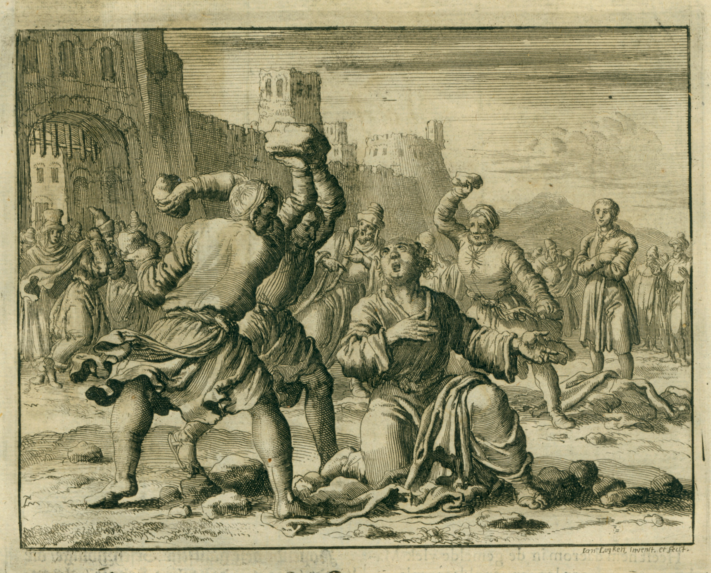

Les Disciples De Jésus Répandent La Bonne Nouvelle

Le Don Du Saint-Esprit
Pendant les quarante jours que Jésus est apparu à Ses disciples après Sa résurrection, Il leur avait dit de ne pas quiter Jérusalem avant d'avoir reçu le don du Saint-Esprit qui avait été promis. (Jean 14:16) Dans le deuxième chapitre du livre des Actes, nous lisons l'histoire des disciples de Jésus qui fesaient exactement cela: Ils etaient tous rassemblés quand soudain ils entendirent un rugissement puissant, comme un vent violent soufflant a travers la maison où ils se tenaient. Ils ont vu ce qui semblait être des flammes par dessus chaque personne! À ce moment, ils furent tous remplis du Saint-Esprit.
Ce remplissage de l'Esprit les fit tous commencer à parler en d'autres langues. (Actes 2:4) Il se trouve que lorsque les disciples de Jésus fut remplis de l'Esprit dans cette manière, il y avait des milliers de personnes de tous les pays autour d'Israël qui étaient venus à Jérusalem pour célébrer l'une des fêtes Juives. (Vous pouvez consulter une liste de ces pays dans Actes 2:8-11.) Miraculeusement, chacun de ces visiteurs a pu entendre les disciples de Jésus disant les bonnes nouvelles du salut par Jésus-Christ, parlant dans leur propre langue!
Le disciple, Pierre, a donné un discours particulièrement émouvant sur la façon dont Jésus, celui qui avait été crucifié pour aucune faute, est le Fils de Dieu. Il dit à la foule que le salut vient par Jésus. Donc beaucoup dans la foule ont été déplacés par ce que Pierre a dit que plus de 3.000 personnes ont accepté Jésus comme le Messie et comme leur sauveur ce jour-là!

Ce jour marque vraiment le début de l'Église Chrétienne; reflechisez à tous ces nouveaux croyants qui sont rentré à leur pays d'origine annoncant à tous leurs amis et leurs familles au sujet du salut par Jésus! Le nombre de personnes qui suivaient “La Nouvelle Doctrine,” que l'église a été appelé, a commencé à croître rapidement dans ce qui est maintenant connu comme le Moyen-Orient et l'Europe Méditerranéenne. Le livre des Actes est l'histoire de la façon dont les disciples de Jésus se propagent la bonne nouvelle du salut.

Conversion et Persécution
Rappelez-vous que c'est à Jérusalem que les disciples fut remplis de le Saint Esprit, et Jérusalem était le lieu même ou de parler aux gens de Jésus été le plus mal vu— après tout, c'est là que Jésus fut crucifié. La persécution des dirigeants juifs qui avaient tué Jésus était maintenant concentré sur le groupe des disciples de Jésus nouvelle et croissante.
Stephen, un prédicateur virulent de l'évangile, fut le premier disciple de La Nouvelle Doctrine d'être tué pour la prédication de l'Évangile. (Actes 6:8-7)
Une Conversion Spectaculaire
Outre Caïphe et les autres prêtres qui présidaient simulacre de procès de Jésus, il y avait un autre Juif zélé qui semblait avoir creer l'œuvre de sa vie à détruire tout les disciples de Jésus. Le nom de cet homme était Saül de Tarse.

Saül a demandé et obtenu la permission des prêtres du temple de Jérusalem de rassembler et emprisionner des Juifs qu'il pouvait trouver qui étaient croyants dans La Nouvelle Doctrine.
Saül avait été fait voyager à la ville de Damas pour chercher la synagogue pour les croyants en Jésus quand une lumière brillante venant du ciel resplendit autour de lui. Il tomba à terre et entendit une voix lui demander, “Saül, pourquoi me persécutes-tu?” (Actes 9:1-19)
“Qui êtes-vous?” Saül lui demanda. Jésus lui-même parlait à Saül. Dieu avait choisi Saül pour apporter la bonne nouvelle de Jésus-Christ aux Gentils (tous les gens qui n'etaient pas Juif) partout. (Actes 9)
Quand les Chrétiens Juifs apprirent que Saül était devenu un croyant dans La Nouvelle Doctrine, ils ne pouvaient pas le croire! Pour lui de changer d'un de leurs pires persécuteurs a l'un de leurs prédicateurs les plus éloquents était tout simplement trop incroyable. Ce serait un long temps avant que la plupart des croyants Juifs aurait la confiance que Saül etait effectivement été converties. Ils le craignaient encore pour tout ce qu'il avait fait dans le passé.
Quand Saül a commencé son ministère de prédication parmi les païens, il a commencé à utiliser la forme romaine de son nom: Paul. (Saül était la forme Juive de son nom.)
Paul a voyagé des milliers de kilometers repandant de l'Evangile de Jésus. Vous pouvez lire de ses voyages dans Actes (11:25-Actes 28). Il a beaucoup souffert la persécution ă cause de sa prédication et l'enseignement de Jésus. Il fut arrêté et emprisonné à Rome. Il était de sa prison il que Paul a écrit beaucoup de lettres aux églises disséminées à travers l'Europe qui sont collectées dans le Nouveau Testament. Grace à la conversion de Paul, nous avons l’écriture qui donne l'instruction Chrétienne et d'encouragement, d'espérance et de l'assurance. Pour lire les lettres de Paul c’est d'apprendre à vivre en tant que Chrétien.